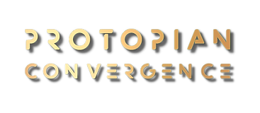

Aspire to a future worth working on now
Interactive events to catalyze the shift to a regenerative society
Envisioning Protopia allows us to look for what we CAN improve, with what we've got now.
We have inherited a crazy world where the status-quo encourages rivalrous dynamics between countries, companies, and all economic actors at every echelon of society. This deeply ingrained unhealthy modus operandi coupled with exponential technology puts our civilization on a dystopian trajectory. This presents us with the opportunity for paradigm-shifting change on the personal and societal level, and with the choice to make an evolutionary jump that alters the future for the better. At Protopian Convergence we step through that portal together, choosing to rethink the current predominant socioeconomic structures and redesign the organizational models behind them.
"To be truly visionary we have to root our imagination in our concrete reality while simultaneously imagining possibilities beyond that reality."
— bell hooks
Who is this for?
What does it take to build a new regenerative civilization?
How can we transform extractive, profit-maximizing practices and entities into regenerative ones?
Protopian Convergence is an immersive experience for changemakers to collaborate, mastermind and prototype solutions to the world's most critical issues. You are invited to explore with us new models for economy and society that are equitable and regenerative so that all life on Earth can flourish.
OUR VISION
A society free of all forms of exploitation and discrimination where humans learn to live alongside nature in a symbiotic and collective way.
OUR MISSION
Bringing together the community of changemakers to foster cross-disciplinary collaboration and co-create new evolutionary systems, cultures, tools and technologies to develop proactive solutions for a thriving civilization and the regeneration of our planet.
What is Protopia?
The word "Protopia" was coined by futurist and Wired's founding editor Kevin Kelly. The concept came from the word "pronoia," (the opposite of "paranoia", the feeling that the entire world is conspiring in your favor) and the world Utopia. It refers to a state that is better today than yesterday, although still not perfect.
Utopia means an ideal state which is unrealistic, impossible to achieve and thus will inevitably lead to disillusions. The word is derived from the Greek word "ou-topos" which means "no place." because when imperfect humans attempt perfectibility, they fail. Actually their disastrous social experiments often lead to dystopias as we have seen multiple times across history. All the horrors the Nazi committed was in the goal to achieve an Aryan Utopia. In contrast, Protopia offers a realistic approach as it proposes incremental progress in steps toward improvement, not perfection.
PAST EVENTS
Past events will be displayed here.